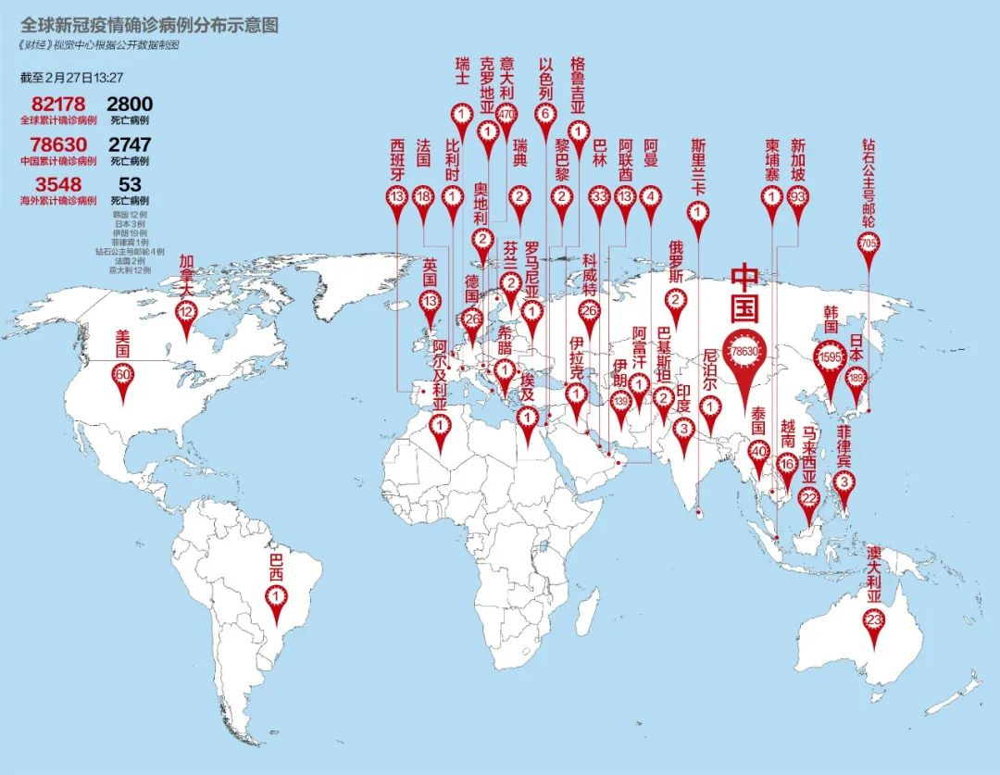

死亡率超10%、拒绝封城、多名高官确诊，伊朗疫情引发中东忧虑
原文链接 备份链接 目前，伊朗是中东地区确诊病例最多的国家。截至27日，伊朗共确诊245例新冠病毒感染病例，其中26例死亡，25例治愈出院。 全文3274字，阅读约需6.5分钟 截至27日，全球除南极洲外的六大洲都出现了新冠病毒感染病 …

目前包括中国大陆在内，全球已经有41个国家和地区出现了疫情，其中，韩国是中国大陆之外疫情蔓延最快的国家。 尽管如此，世卫组织不希望在“没有谨慎和清晰地分析事实情况之前”仓促宣布疫情为全球“大流行病”

文 |《财经》特派记者 金焱 发自华盛顿
编辑 | 苏琦
新型冠状病毒疫情继续在全世界蔓延，世界卫生组织总干事谭德塞当地时间2月25日表示，在中国之外，目前全球共有37个国家报告了2790例确诊病例，其中44人死亡。2月26日，中国境外报告的新增病例数量首次超过了中国境内。
中国以外，不仅意大利、伊朗及韩国的患者数量突然激增，疫情在这些引发新关切的国家四处扩散，与伊朗相关的病例已输入巴林、伊拉克、科威特和阿曼，与意大利相关联的病例则已经输入阿尔及利亚、奥地利、克罗地亚、德国、西班牙和瑞士。
巴西政府在当地时间2月26日确认了首例病例，此时正值巴西狂欢节期间。61岁的巴西男子因前往意大利北部伦巴第地区出差，而成为南美洲出现的首位感染者。这名男子2月21日乘飞机返回圣保罗，随后在家中接触了约30名家人，机上乘客以及他的家人目前都在接受观察。这名男子目前情况稳定，在圣保罗的家中隔离。巴西之外，格鲁吉亚、巴基斯坦等国近日也报告了首例新冠肺炎病例。
美国宾夕法尼亚大学佩雷尔曼医学院的Schaeffer医学教授和高级医学实践助理院长、宾州卓越医疗服务执行总裁杰克·恩迪（Jack Ende）对《财经》记者说,，新冠肺炎疫情可能很快就成为“大流行病”，这是全球医学界要面对的一场“完美风暴”。
恩迪之所以如此推断，他指出，首先是因为，“我们除隔离外，没有其他预防策略，比如疫苗。另外也没有及时、早期检测发现病毒的手段，且我们不了解病毒传播所需的全部知识，包括无症状期传播的可能性；目前尚无针对新冠病毒对人体器官系统造成损伤的具体疗法，只能靠医生和医疗机构提供支持治疗来应对；最后，我们仍然没有动物模型来测试如何治疗和检测新冠病毒，动物模型的缺乏阻碍了我们在免疫，早期发现和治疗领域迅速推进的能力。”
为应对“大流行病”做准备
中国疫情趋缓的同时，亚洲、欧洲和中东地区的疫情却在快速蔓延。据最新统计，目前包括中国大陆在内，全球已经有41个国家和地区出现了疫情，其中，韩国是中国大陆之外疫情蔓延最快的国家。
据韩联社报道，韩国疾病管理本部2月27日通报称，当地时间26日16时至27日9时，韩国新增334例新冠肺炎确诊病例，累计确诊1595例。26日，韩国国会表决通过三项法案修订案，包括《传染病防治管理法》《检疫法》和《医疗法》。韩国国会表示，希望上述法案修订案能为防控新冠肺炎疫情提供司法保障，并进一步提高国家防疫应对能力。
目前，韩国政府已将疫情预警上调至最高级别的“严重”，并实施关于集体活动、利用公共设施的指南修订案，建议民众暂停聚集在室内或是在人群密集的户外举行活动，也尽量避免聚餐、旅游等私人聚会和活动。
尽管如此，世卫组织不希望在“没有谨慎和清晰地分析事实情况之前”仓促宣布疫情为全球“大流行病”。谭德塞强调，“世卫组织已经宣布新型冠状病毒疫情为国际关注的突发公共卫生事件，这是世卫组织最高级别的预警。草率地使用‘全球大流行’一词，并不会产生任何切实的益处，只会带来严重的风险，放大没有必要和缺乏根据的恐惧及污名化，让社会体系陷入瘫痪。”
谭德塞同时指出，世卫组织正在24小时持续监测疫情进展，并与本组织内外专家保持沟通，假如疫情真的发展到了需要宣布“全球大流行”的地步，世卫组织也不会有任何迟疑。他说，“目前，我们没有看到持续和密集的社区传播，也没有看到大规模的重症和死亡。拥有14亿人口的中国，病例数量不到8万人，拥有63亿人口的世界其余国家，现有病例数量为2790人。”
美国目前共有60例新冠确诊病例，其中美国本土的确诊病例是15例，病患涉及旅游或与旅行者有过密切的接触。美国从武汉撤出的侨民中有3人确诊传染了新冠病毒，从日本“钻石公主”号游轮上接回的美国人中有42起确诊病例。
美国首例来源不明确诊病例
美国疾病控制与预防中心（CDC）在当地时间2月26日表示，美国已有60例确诊病例，其中大部分来自从日本的钻石公主号邮轮上被撤回的乘客，还有三起来自从武汉撤回的侨民。就美国境内发现的病例来说，美国疾控中心网站数据显示目前的确诊病例是14例，其中12例有中国旅行史，另外两例是密切接触者之间的人传人。
美国卫生部长阿扎尔周三在国会的一次听证会上说，他刚刚得到有了第15例确诊病例的消息，当局还在研究该病例的病毒流行轨迹。CDC同天晚间证实在加州北部发现该起新增病例，患者没有已知疫区旅行史或与感染病毒者的密切接触史。CDC表示仍在继续调查感染来源。这有可能是美国的首起社区传播病例。
美国卫生官员说，疫情有可能成为全球“大流行病”，迟早会在美国出现社区传播。在特朗普政府面临更大防疫压力之际，当地时间2月26日下午6时30分，美国总统特朗普和美国疾病控制与预防中心(CDC)官员等出席新闻发布会，谈论新冠病毒扩散问题。
特朗普宣布任命副总统彭斯做抗击新冠病毒疫情的大主管，因彭斯在担任印第安纳州州长期间有医疗政策方面的经验。彭斯将负责协调医务人员和其他专业人员，防止病毒在美国蔓延。
特朗普表示，到目前为止，美国对新冠肺炎疫情采取的预防措施意味着美国人面临的风险“仍然很低”。当天特朗普总统在推特上写道，经常批评他的美国有线电视新闻网（CNN）和MSNBC“正在尽一切可能让新冠病毒看起来尽可能糟糕，如果可能的话，包括让市场恐慌”。
美国疾病控制与预防中心(CDC)首席副主任安妮·舒查特(Anne Schuchat)当天敦促美国人以及该国学校和企业做好应对新冠肺炎疫情的准备。她说，“我们预计会看到更多病例。现在是做准备的好时机。”

▲点击图片查看更多疫情报道
责编 | 黄端 duanhuang@caijing.com.cn
本文为《财经》杂志原创文章，未经授权不得转载或建立镜像。如需转载，请在文末留言申请并获取授权。
原文链接 备份链接 目前，伊朗是中东地区确诊病例最多的国家。截至27日，伊朗共确诊245例新冠病毒感染病例，其中26例死亡，25例治愈出院。 全文3274字，阅读约需6.5分钟 截至27日，全球除南极洲外的六大洲都出现了新冠病毒感染病 …
原文链接 备份链接 世界卫生组织官员对韩国和伊朗等地爆发新冠病毒疫情表示担忧，但表示情况尚未上升到大流行病的程度。在美欧金融市场，这一模式已变得清晰：新增确诊病例数=增加的市场恐慌=疲弱的资本市场。这一模式会否必然在中国出现，尚待观察 …
原文链接 备份链接 虽然多数民众情绪表现稳定，但药店里口罩、酒精、消毒水已经被抢购一空。长期遭受制裁的伊朗，在医疗物资、医疗条件上确实没有办法应付疫情大规模爆发而产生的医疗需求上升。 2020年2月21日，伊朗纳杰夫国际机场，工作人员为旅 …
原文链接 备份链接 【财新网】（记者 黄蕙昭 综合）新冠病毒的全球考验仍在继续：意大利疫情开始向外扩散，韩国单日新增破新高，日本控制新冠检测规模引发担忧。另一面，国内疫情发展见缓，已有15省份调降应急响应级别，如何确保复工潮下疫情持续可控 …
原文链接 备份链接 韩国1月20日发现首例确诊病例，此后一个月疫情发展缓慢，到2月18日确诊31例。2月19日后突然暴增，一周新增超过1200例。 18日确诊的第31号患者，被视为“超级传播者”。 韩国新冠疫情的一大特征是，在特定群 …